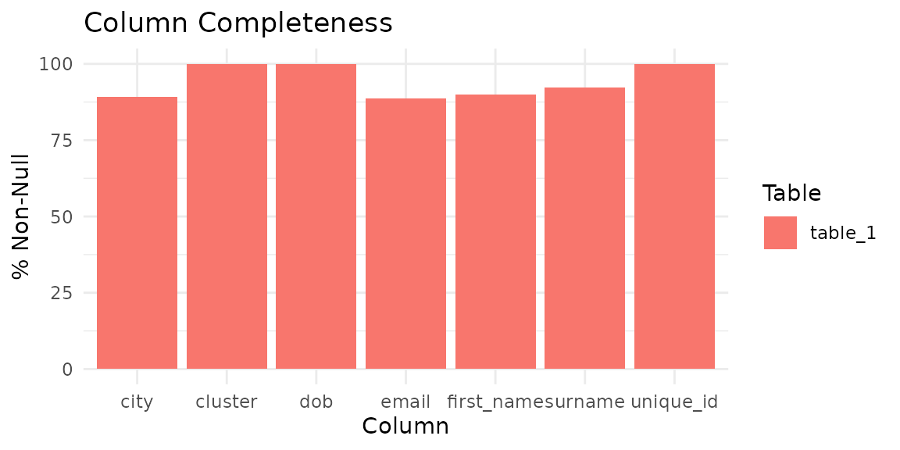
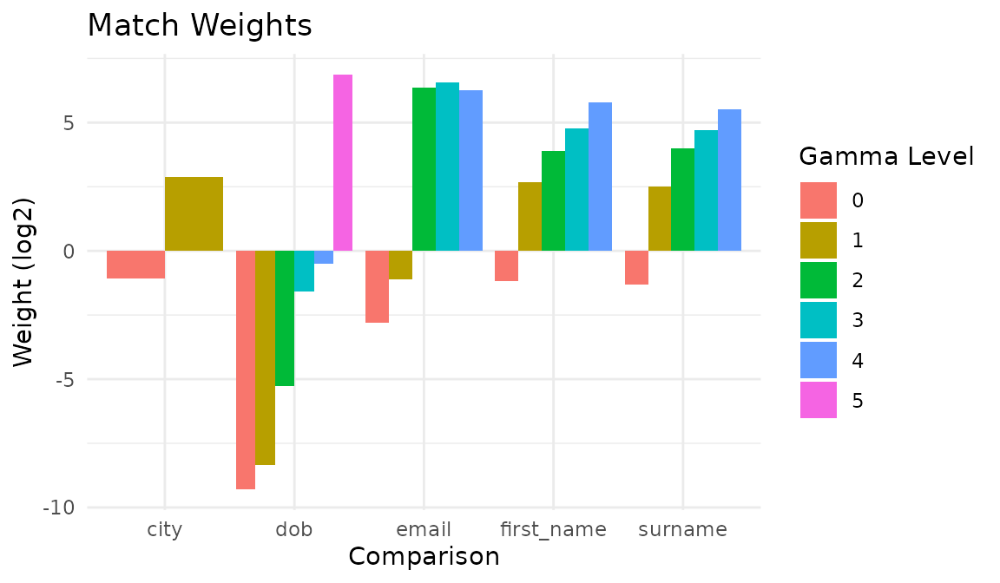
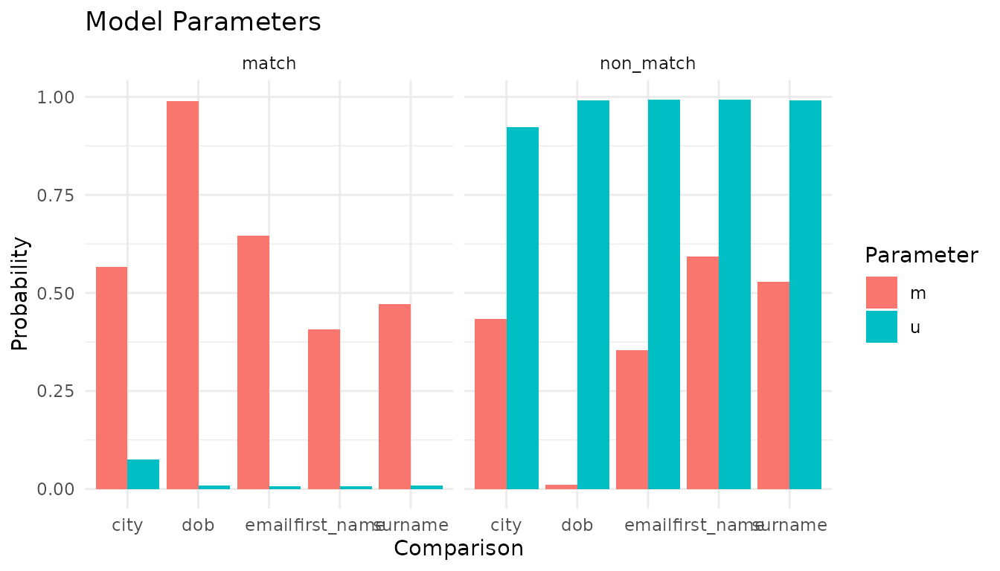
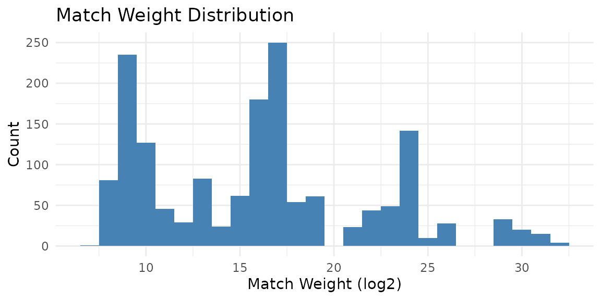
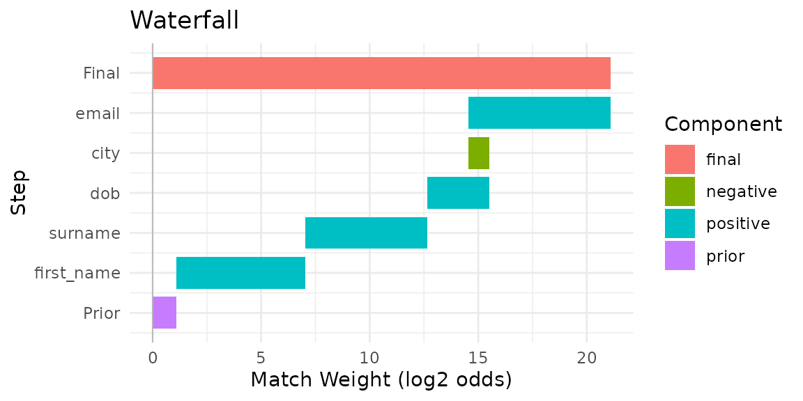
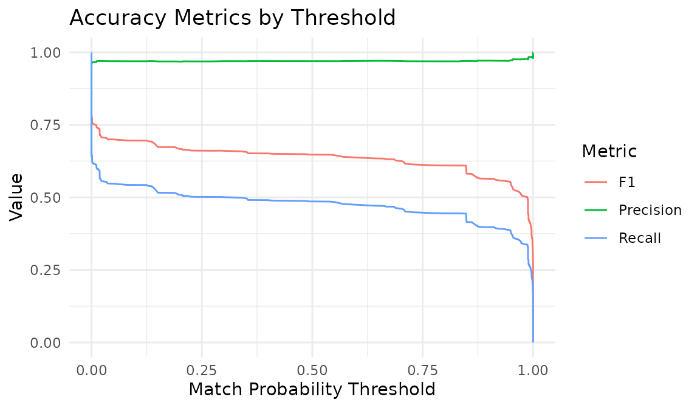
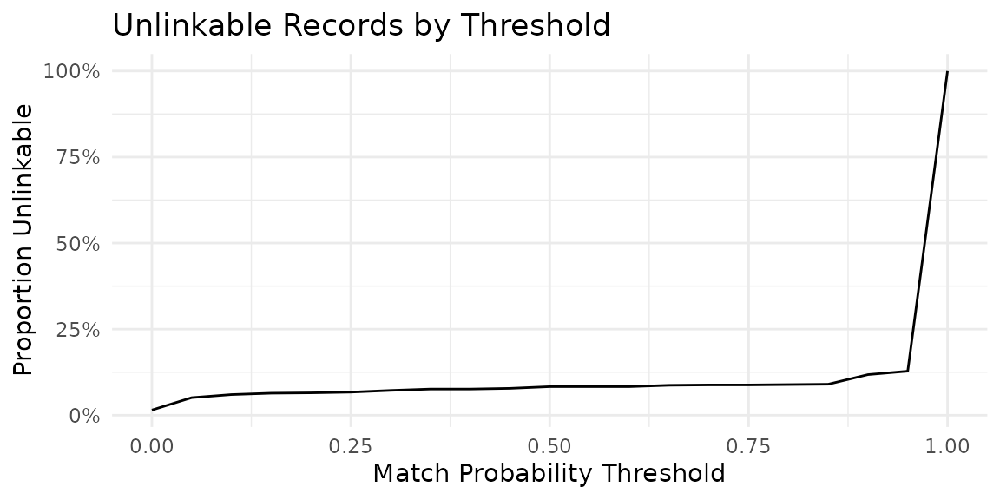

Deduplication with Evaluation
deduplication.RmdThis vignette walks through a complete deduplication workflow on the
fake_1000 dataset, including model training, prediction,
clustering, and evaluation against ground-truth labels. The dataset is
the primary demo data from the Python splink
library. It contains 1,000 records representing 181 unique people, each
with varying numbers of duplicate entries corrupted with typos, missing
values, and other realistic data-quality issues.
Explore the data
df <- fake_1000
head(df)
#> # A tibble: 6 × 7
#> unique_id first_name surname dob city email cluster
#> <int> <chr> <chr> <chr> <chr> <chr> <int>
#> 1 0 Julia NA 2015-10-29 London hannah88@powers.com 0
#> 2 1 Julia Taylor 2015-07-31 London hannah88@powers.com 0
#> 3 2 Julia Taylor 2016-01-27 London hannah88@powers.com 0
#> 4 3 Julia Taylor 2015-10-29 NA hannah88opowersc@m 0
#> 5 4 oNah Watson 2008-03-23 Bolton matthew78@ballard-mcdo… 1
#> 6 5 Noah Watson 2008-03-23 Bolton matthew78@ballard-mcdo… 1The cluster column is the ground truth: records sharing
the same cluster value refer to the same person. There are 181 unique
entities across 1000 records. Note that missing values appear as
NA, reflecting real-world data-quality challenges.
Before building a model, profile the data to understand its completeness and value distributions:
con <- DBI::dbConnect(duckdb::duckdb())
comp <- il_completeness(df, con = con)
comp
#> # A tibble: 7 × 5
#> table column n_total n_non_null pct_non_null
#> <chr> <chr> <int> <int> <dbl>
#> 1 table_1 unique_id 1000 1000 100
#> 2 table_1 first_name 1000 900 90
#> 3 table_1 surname 1000 923 92.3
#> 4 table_1 dob 1000 1000 100
#> 5 table_1 city 1000 891 89.1
#> 6 table_1 email 1000 888 88.8
#> 7 table_1 cluster 1000 1000 100
autoplot(comp)
Check column value distributions to inform blocking and comparison choices:
il_profile(df[, c('first_name', 'surname', 'city')], con = con, top_n = 5)
#> # A tibble: 15 × 3
#> column value n
#> <chr> <chr> <dbl>
#> 1 first_name NA 100
#> 2 first_name George 22
#> 3 first_name Harry 18
#> 4 first_name Ivy 18
#> 5 first_name Noah 17
#> 6 surname NA 77
#> 7 surname Taylor 41
#> 8 surname Jones 30
#> 9 surname Brown 26
#> 10 surname Thomas 18
#> 11 city London 257
#> 12 city NA 109
#> 13 city Birmingham 36
#> 14 city Leeds 33
#> 15 city Sheffield 31Choose blocking rules
il_suggest_blocking() enumerates columns and ranks them
as blocking keys. A good blocking key has high n_distinct
(narrow blocks, fewer pairs) and high coverage (few missing
values):
il_suggest_blocking(df, con = con)
#> # A tibble: 6 × 6
#> rule n_distinct coverage n_pairs pct_of_cartesian score
#> <chr> <int> <dbl> <int> <dbl> <dbl>
#> 1 dob 394 1 1850 0.370 0.996
#> 2 cluster 181 1 2975 0.596 0.994
#> 3 surname 317 0.923 3278 0.656 0.917
#> 4 first_name 326 0.9 2372 0.475 0.896
#> 5 email 336 0.888 1603 0.321 0.885
#> 6 city 174 0.891 36905 7.39 0.825The spec below uses first_name, surname,
and city, which rank among the top columns here.
Define the specification
Choose comparisons and blocking rules. Names use Jaro-Winkler
similarity, dates of birth use the cl_dob() helper, and
city uses exact matching with term-frequency adjustments:
spec <- il_spec() |>
il_compare(first_name, cl_name()) |>
il_compare(surname, cl_name()) |>
il_compare(dob, cl_dob()) |>
il_compare(city, cl_exact(term_frequency = TRUE)) |>
il_compare(email, cl_email()) |>
il_block_on(first_name) |>
il_block_on(surname) |>
il_block_on(city)
spec
#> Linkage Specification
#> Comparisons (5):
#> first_name : levels
#> surname : levels
#> dob : levels
#> city : exact
#> email : levels
#> Blocking rules (3, OR-ed):
#> 1. first_name
#> 2. surname
#> 3. cityEstimate how many pairs each blocking rule generates:
il_count_pairs(
df,
block_on(first_name),
block_on(surname),
block_on(city),
con = con
)
#> # A tibble: 3 × 4
#> rule n_pairs cumulative_pairs pct_of_cartesian
#> <chr> <dbl> <dbl> <dbl>
#> 1 first_name 2372 2372 0.475
#> 2 surname 3278 5042 1.01
#> 3 city 36905 40793 8.17Train the model
model <- il_model(df, spec = spec, con = con)Estimate the prior match probability using deterministic rules:
model <- il_estimate_prior(
model,
block_on(first_name, surname),
block_on(email),
recall = 0.6
)Estimate u-probabilities from random pairs and m-probabilities via EM:
model <- il_estimate_u(model, max_pairs = 1e5)
model <- il_estimate_em(model, block_on(first_name))
#> EM trained: surname, dob, city, and
#> email | skipped (blocked on): first_name
model <- il_estimate_em(model, block_on(dob))
#> EM trained: first_name, surname, city, and
#> email | skipped (blocked on): dobInspect the trained model
summary(model)
#> irelink Model
#> Status: Trained
#> Link type: dedupe
#> Records: 1000
#> Comparisons: 5
#> Blocking rules: 3
#>
#> Parameters:
#> prior: 0.6821835
#> comparisons: # A tibble: 23 × 4
#> comparisons: comparison gamma_level m u
#> comparisons: <chr> <int> <dbl> <dbl>
#> comparisons: 1 first_name 0 0.360 0.763
#> comparisons: 2 first_name 1 0.109 0.0147
#> comparisons: 3 first_name 2 0.0276 0.00168
#> comparisons: 4 first_name 3 0.0887 0.00292
#> comparisons: 5 first_name 4 0.414 0.00672
#> comparisons: 6 surname 0 0.349 0.809
#> comparisons: 7 surname 1 0.0945 0.0145
#> comparisons: 8 surname 2 0.0272 0.00158
#> comparisons: 9 surname 3 0.0692 0.00247
#> comparisons: 10 surname 4 0.460 0.00951
#> comparisons: # ℹ 13 more rows
#> u_estimation: 1e+05
#> u_estimation: FALSE
#> u_estimation: NULL
#> u_estimation: NULL
#> u_estimation: 100000
#> u_estimation: 1The match weights chart shows the discriminative power of each comparison:
autoplot(model)
The parameter chart shows the raw m and u probabilities:
autoplot(model, type = 'parameters')
Save and reuse the model
Once you are satisfied with the parameters, save the model to disk. The saved file stores the spec and trained parameters so you can re-apply the model without retraining:
Load and attach the saved model to the same or different data with
il_load() and il_attach():
con2 <- DBI::dbConnect(duckdb::duckdb())
loaded <- il_load(path)
model2 <- il_attach(loaded, fake_1000, con = con2)
head(predict(model2, threshold = 0.85))
#> # A tibble: 6 × 11
#> unique_id_l unique_id_r gamma_first_name gamma_surname gamma_dob gamma_city
#> <int> <int> <int> <int> <int> <int>
#> 1 0 3 4 -1 5 0
#> 2 2 3 4 4 2 0
#> 3 10 11 4 4 2 0
#> 4 33 36 4 4 5 1
#> 5 38 42 4 4 5 0
#> 6 40 42 4 4 2 1
#> # ℹ 5 more variables: gamma_email <int>, match_weight <dbl>, tf_adj_city <dbl>,
#> # total_match_weight <dbl>, match_probability <dbl>
DBI::dbDisconnect(con2, shutdown = TRUE)This pattern supports the common production workflow: train once on a representative sample, save the model, and re-apply as new data arrives.
Predict and cluster
Score all candidate pairs and apply a probability threshold:
View the match-weight distribution:
autoplot(predictions)
Inspect how individual pairs are scored with a waterfall chart:
autoplot(predictions, which = 1)
Resolve pairwise links into entity clusters:
clusters <- il_cluster(predictions, threshold = 0.85)
head(clusters)
#> # A tibble: 6 × 2
#> unique_id cluster_id
#> <chr> <chr>
#> 1 411 cluster_409
#> 2 685 cluster_684
#> 3 882 cluster_879
#> 4 931 cluster_924
#> 5 369 cluster_368
#> 6 659 cluster_654Evaluate against ground truth
The cluster column in the original data provides
ground-truth entity labels. Convert these to pairwise labels for
evaluation:
# Use the bundled clerical labels from splink
labels_raw <- fake_1000_labels
# Rename to match irelink's evaluation convention
labels <- data.frame(
unique_id_l = labels_raw$unique_id_l,
unique_id_r = labels_raw$unique_id_r,
is_match = as.integer(labels_raw$clerical_match_score)
)
nrow(labels)
#> [1] 3176
sum(labels$is_match)
#> [1] 2031Accuracy metrics
acc <- il_accuracy(model, labels = labels)
acc
#> # A tibble: 418 × 16
#> threshold tp fp fn tn fn_blocking_miss precision recall f1
#> <dbl> <int> <int> <int> <int> <int> <dbl> <dbl> <dbl>
#> 1 0.00000887 1135 229 896 916 896 0.832 0.559 0.669
#> 2 0.0000171 1135 229 896 916 896 0.832 0.559 0.669
#> 3 0.0000188 1135 229 896 916 896 0.832 0.559 0.669
#> 4 0.0000205 1135 229 896 916 896 0.832 0.559 0.669
#> 5 0.0000362 1135 229 896 916 896 0.832 0.559 0.669
#> 6 0.0000396 1135 229 896 916 896 0.832 0.559 0.669
#> 7 0.0000436 1135 229 896 916 896 0.832 0.559 0.669
#> 8 0.0000839 1135 229 896 916 896 0.832 0.559 0.669
#> 9 0.000123 1135 229 896 916 896 0.832 0.559 0.669
#> 10 0.000134 1115 152 916 993 896 0.880 0.549 0.676
#> # ℹ 408 more rows
#> # ℹ 7 more variables: f2 <dbl>, f0_5 <dbl>, specificity <dbl>, npv <dbl>,
#> # accuracy <dbl>, p4 <dbl>, phi <dbl>
autoplot(acc)
Error inspection
Examine false positives and false negatives at a specific threshold:
errors <- il_errors(model, labels = labels, threshold = 0.85)
head(errors)
#> # A tibble: 6 × 6
#> unique_id_l unique_id_r match_weight match_probability true_label error_type
#> <int> <int> <dbl> <dbl> <lgl> <chr>
#> 1 4 6 9.28 0.999 FALSE false_posit…
#> 2 4 7 18.0 1.000 FALSE false_posit…
#> 3 4 8 9.83 0.999 FALSE false_posit…
#> 4 4 9 15.3 1.000 FALSE false_posit…
#> 5 4 10 13.2 1.000 FALSE false_posit…
#> 6 4 11 6.15 0.994 FALSE false_posit…Unlinkables
How many records cannot be linked at each threshold?
unlink <- il_unlinkables(model)
autoplot(unlink)
Cleanup
il_cleanup(model)
DBI::dbDisconnect(con, shutdown = TRUE)il_cleanup(model) is model-scoped. If an interactive run
failed before you kept the model object, call
il_cleanup_all(con) to remove all irelink
tables from the connection before disconnecting.